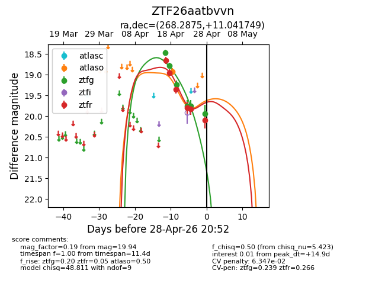
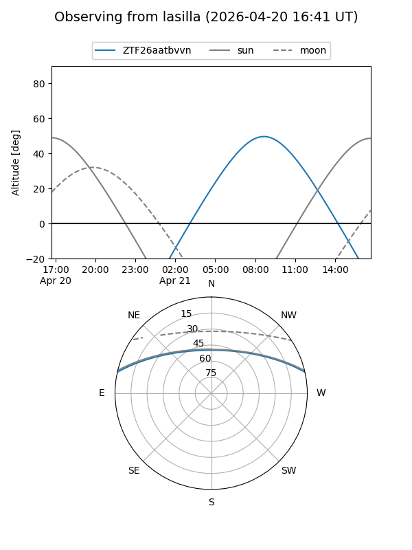
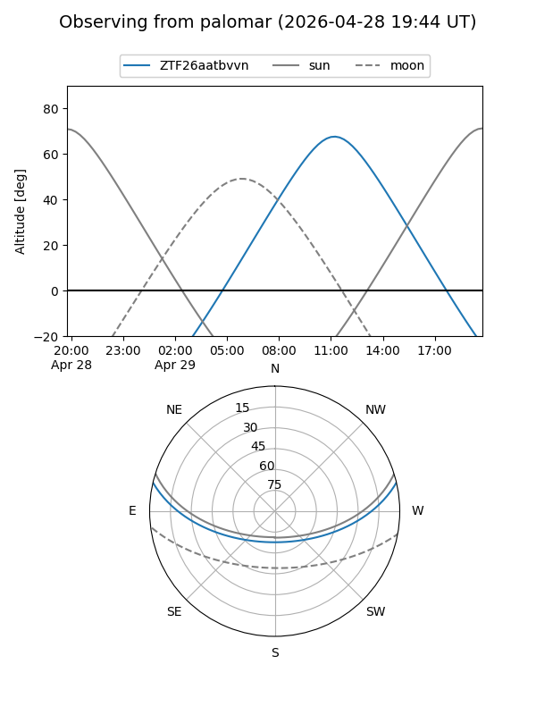
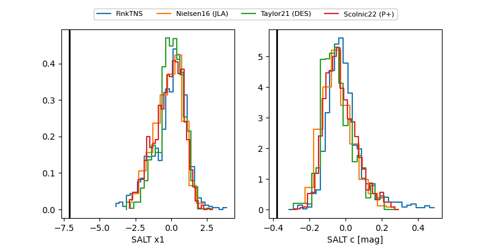

ZTF26aatbvvn
Target ZTF26aatbvvn at 2026-04-28 20:56
Aliases and brokers:
FINK: link
Lasair: link
ALeRCE: link
alt names
ZTF26aatbvvn (ztf,fink_ztf)
Coordinates:
equatorial (ra, dec) = 268.2875,+11.04175
equatorial (HMS+DMS) = 17:53:08.99,+11:02:30.30
galactic (l, b) = (36.4172,+17.88483)
Flags:
likely cv
Photometry:
last atlaso=18.93, ztfg=19.94, ztfr=20.10
1 atlaso, 6 ztfg, 6 ztfr detections
Lightcurve

Visibility


Additional plots
